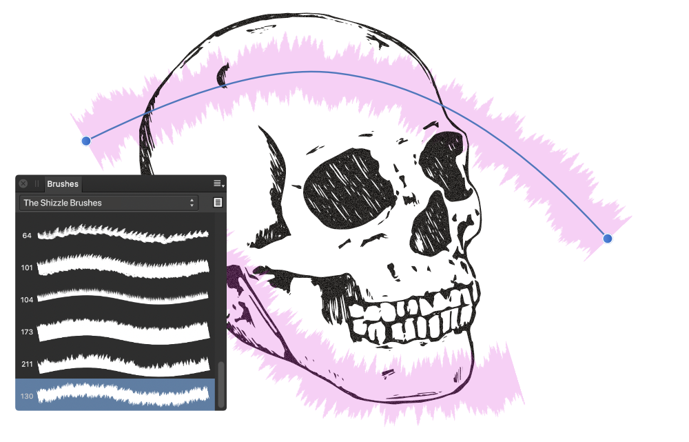

Use the Vector Brush tool to apply vector brush strokes to your design.

Vector painting
Affinity Designer provides an impressive selection of vector brushes for use with your Vector Brush Tool with each category containing brushes of varying properties and characteristics; vector brushes are only available via Designer Persona. As well as using the Vector Brush Tool to apply 'freehand' vector brush strokes to your page, brush strokes can be applied to object outlines and around photos.
A key characteristic of vector brush strokes (compared to raster brush strokes) is that they can be edited using the Node Tool after applying to the page.
Brush strokes are applied to your page using a combination of the Vector Brush Tool, the Brushes panel and the tool's context toolbar.
If you want to save a brush, these can be stored in the panel as a custom brush for future use.
To paint vector brush strokes:
From the Tools panel, select the Vector Brush Tool.
From the Brushes panel, select a brush thumbnail of your choice.
Adjust the context toolbar settings.
Drag on the page in the direction that you want the brush stroke to follow.
To smooth brush strokes as you paint:
On the context toolbar, enable the Stabilizer option and choose one of the following:
Rope mode—drag the stroke end by a 'rope' that smooths the stroke but lets you introduce sharp corners at increasing Length (radius) values by redirecting the slackened rope.
Window mode—smooths the stroke by averaging the stroke's position over a Window whose size is configurable.
To edit brush strokes after you paint:
Press the to move displayed nodes and adjust control handles. Color and opacity can be altered from the Color panel.
To apply a vector brush stroke to a selected shape:
From the Stroke panel, select the Texture Line Style and a Width.
From the Brushes panel, select a brush thumbnail of your choice.
If needed, click Properties to edit the brush used as your Texture Line Style via a Brush dialog.
To retain your vector brush stroke width when changing brushes:
With pressed, select a new vector brush from the Brushes panel.
 To paint vector brush strokes:
To paint vector brush strokes: